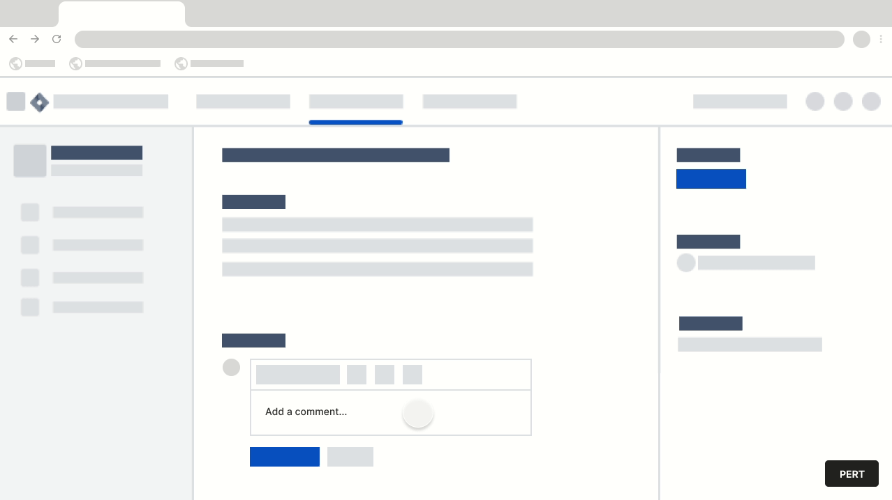

PERT With Wings
This extension assists you to make consistent PERT estimates table in JIRA / Azure DevOps comments across projects.
This extension assists you to make consistent PERT estimates table in JIRA / Azure DevOps comments across projects.
Navigate to your JIRA / Azure DevOps ticket and click on comment box to make it editable.

Click on the PERT button in bottom right in your window.
Fill in the boxes and click 'Add PERT Estimate' button.
PERT (Program Evaluation and Review Technique) calculates a weighted average as the PERT estimate by using the formula
Pert Estimate = (Optimistic + (4 X Most Likely) + Pessimistic)/6
Estimate for all favourable conditions with no risks or changes.
The Optimistic Estimate is the “best-case” and thus shortest duration, or lowest cost, to complete the work.
Estimate for both favourable and unfavourable conditions, with some risks occurring.
The name is accurate in the estimate is based on changes, but ones that have been planned for and can be mitigated. The Most Likely estimate captures the highest likelihood of completing the work in the given duration or cost.
Estimate for all unfavourable conditions with all negative risks occurring and no mitigation of negative risks
It is the opposite of the Optimistic estimate in concept. The Pessimistic Estimate is the “worst-case” and thus longest duration, or highest cost, to complete the work.
Raise PR in https://github.com/aligent/pert-with-wings.